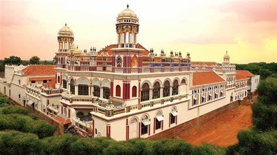

About Karaikudi
Karaikudi, located in the Sivaganga district of Tamil Nadu, is the principal town of the Chettinad region. Known for its rich cultural heritage, palatial mansions, and unique cuisine, Karaikudi offers a glimpse into the opulent lifestyle of the Nattukottai Chettiars.
Chettinad Architecture
The Chettinad region is famous for its unique architectural style, characterized by:
- Spacious courtyards
- Intricate wood carvings
- Italian marble floors
- Belgian glass windows
Chettinad Cuisine
Chettinad cuisine is one of the spiciest and most aromatic in India. Some popular dishes include:
- Chettinad Chicken Curry
- Kuzhi Paniyaram
- Kavuni Arisi (Black Rice Pudding)
- Vegetable Biryani
Places to Visit

Don't miss these attractions when you visit Karaikudi:
- Chettinad Palace
- Athangudi Palace
- Pillayarpatti Vinayagar Temple
- Chettinad Mansion
- MSMM Glass House